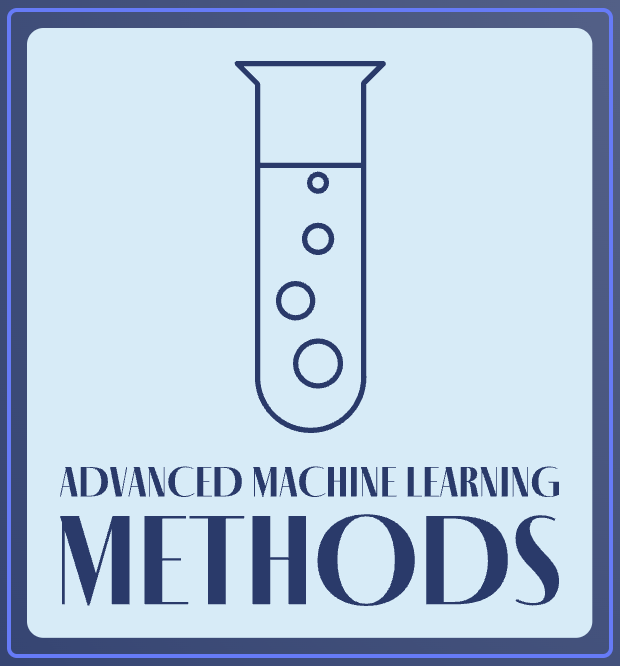

Zaawansowane metody uczenia maszynowego
Wstęp

Książka ta jest napisana na potrzeby prowadzenia zajęć na kierunku Inżynieria i analiza danych z przedmiotu Zaawansowane metody uczenia maszynowego. Jest swego rodzaju autorskim podejściem do tematu, przedstawiającym wybrane metody uczenia maszynowego, które rzadziej występują w opracowaniach na temat uczenia maszynowego.
Uczenie maszynowe stanowi obszar intensywnego rozwoju, który obejmuje szereg technik umożliwiających bardziej skomplikowane i wydajne modele predykcyjne. Wśród tych metod warto wyróżnić głębokie sieci neuronowe, zwłaszcza konwolucyjne sieci neuronowe (CNN) i rekurencyjne sieci neuronowe (RNN). CNN są wykorzystywane w zadaniach przetwarzania obrazów, gdzie potrafią efektywnie ekstrahować hierarchiczne cechy z danych wejściowych, natomiast RNN są efektywne w analizie sekwencji danych, takich jak język naturalny. Ponadto, metody uczenia maszynowego obejmują techniki transferu wiedzy, uczenie ze wzmocnieniem, generatywne modele, takie jak generatywne sieci przeciwdziedzinowe (GAN), czy też autokodery. Te nowoczesne podejścia umożliwiają modelom uczącym się wykonywanie bardziej złożonych zadań, a także adaptację do różnorodnych danych wejściowych, co sprawia, że są one stosowane w obszarach takich jak rozpoznawanie obrazów, przetwarzanie języka naturalnego, czy nawet w autonomicznych systemach decyzyjnych.
Ponadto, zaawansowane metody uczenia maszynowego obejmują także techniki regularyzacji, optymalizacji i inżynierię cech. Regularyzacja ma na celu zapobieganie przeuczeniu poprzez kontrolowanie złożoności modelu, natomiast optymalizacja skupia się na dostosowywaniu wag modelu w celu minimalizacji funkcji straty. Inżynieria cech polega na ręcznym lub automatycznym dostosowywaniu danych wejściowych w celu uzyskania lepszych wyników modelu. Dzięki tym zaawansowanym metodom, uczenie maszynowe staje się coraz bardziej potężnym narzędziem w analizie danych i podejmowaniu skomplikowanych decyzji w różnych dziedzinach.
Modele predykcyjne dla wielu wyjść, czyli tzw. multi-target regression and classification, stanowią kolejny istotny obszar w dziedzinie uczenia maszynowego. W przypadku multi-target regression, celem jest przewidywanie wielu wartości wyjściowych dla danego zestawu wejściowego, co często spotyka się w złożonych problemach predykcyjnych, takich jak prognozowanie wielu parametrów jednocześnie. Z kolei w przypadku multi-target classification, model ma za zadanie przypisanie jednego lub więcej klas dla każdego przykładu wejściowego. Te modele są powszechnie stosowane w różnych dziedzinach, takich jak bioinformatyka, finanse czy przemysł, gdzie jednoczesne przewidywanie wielu zmiennych jest kluczowe dla skutecznego rozwiązania problemu. Wdrożenie takich zaawansowanych modeli predykcyjnych wymaga starannej obróbki danych, odpowiedniego dostosowania architektury modelu oraz precyzyjnej oceny wyników, co sprawia, że są one istotnym narzędziem w obszarze analizy danych i podejmowania decyzji.
Modele językowe stanowią jeszcze jeden kluczowy obszar w dziedzinie uczenia maszynowego, skoncentrowany na zrozumieniu i generowaniu ludzkiego języka naturalnego. Głębokie sieci neuronowe, zwłaszcza rekurencyjne sieci neuronowe (RNN) i transformery, zostały skutecznie wykorzystane do tworzenia modeli językowych o zdolnościach przetwarzania i generowania tekstu na poziomie zbliżonym do ludzkiego. Te modele zdolne są do zrozumienia kontekstu, analizy gramatyki, a także generowania spójnych i sensownych odpowiedzi. Wykorzystywane są w różnorodnych zastosowaniach, takich jak tłumaczenie maszynowe, generowanie tekstu, czy analiza nastroju w tekście. Ponadto, pre-trenowane modele językowe, takie jak BERT czy GPT (Generative Pre-trained Transformer), zdobywają popularność, umożliwiając dostosowanie ich do różnych zadań poprzez fine-tuning. W miarę postępu badań i rozwoju w tej dziedzinie, modele językowe stają się coraz bardziej zaawansowane, co przyczynia się do doskonalenia komunikacji między maszynami a ludźmi oraz do rozwijania nowych możliwości w dziedzinie przetwarzania języka naturalnego.
Wspomniane powyżej metody i modele będą stanowić treść wykładów z wspomnianego na wstępie przedmiotu.